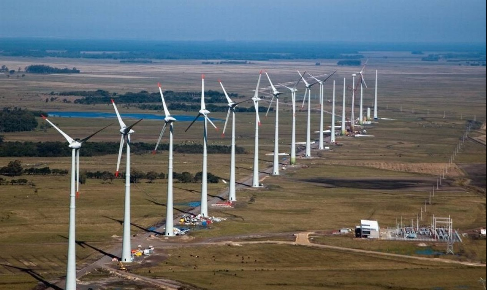

A energia eólica é o processo pelo qual o vento é transformado em energia cinética e, posteriormente, em eletricidade, utilizando equipamentos chamados turbinas eólicas. A conversão da energia do ar em movimento em eletricidade é conhecida como energia eólica. Nesse processo, a energia do vento movimenta pás (ou hélices), cujo movimento é convertido em energia elétrica nas turbinas por meio de um gerador. Adicionalmente, a energia eólica tem origem na energia solar, uma vez que a absorção dessa energia causa variações de temperatura e pressão na atmosfera, gerando vento. Para a produção em grande escala de energia eólica, várias turbinas são instaladas em locais estrategicamente escolhidos, conhecidos como parques eólicos, considerando as características do vento na região. O vento tem sido utilizado como gerador de energia desde a antiguidade, em sistemas como bombeamento de água, moagem de grãos e propulsão de embarcações. A ONU (Organização das Nações Unidas) classifica a energia eólica como MDL (Mecanismo de Desenvolvimento Limpo) e a destaca como prioridade para investimentos que visam incentivar a chamada economia verde.
A exploração comercial da energia eólica no Brasil iniciou em 1992, com a instalação do primeiro aerogerador em Fernando de Noronha (PE). A matriz atual conta com 298 usinas eólicas, consolidando o país como líder do setor no mercado sul-americano.
A produção diária média é de 2,9 megawatts médios, o que é suficiente para abastecer 13 milhões de pessoas. Atualmente, a energia eólica representa 3,5% da matriz energética brasileira, com a meta do Ministério das Minas e Energia sendo alcançar 11% até 2023.
No cenário atual, os cinco estados com maior geração no ano de 2022 foram: Bahia (24,17 TWh), Rio Grande do Norte (23,20 TWh), Piauí (10,29 TWh), Ceará (7,06 TWh) e Rio Grande do Sul (5,37 TWh), no ano de 2022, segundo dados da Associação Brasileira de Energia Eólica (ABEEólica).
É uma fonte de energia inesgotável; Não emite gases; Não gera resíduos; Os geradores podem ser instalados em áreas sem a necessidade de deslocamento da comunidade, sendo compatíveis com atividades como agricultura e pecuária; Aumenta a autonomia energética do país; Reduz a dependência de combustíveis fósseis; É uma fonte barata de energia quando considerado o investimento a longo prazo; A instalação ocorre em menos de 6 meses; A recuperação do investimento, incluindo fabricação, instalação e manutenção do aerogerador, ocorre em menos de seis meses após o início da atividade.
Intermitência do vento e desafios na integração para a geração constante de energia; A instalação modifica a paisagem, com um impacto visual significativo; Possibilidade de poluição sonora; Impacto sobre a migração das aves.
